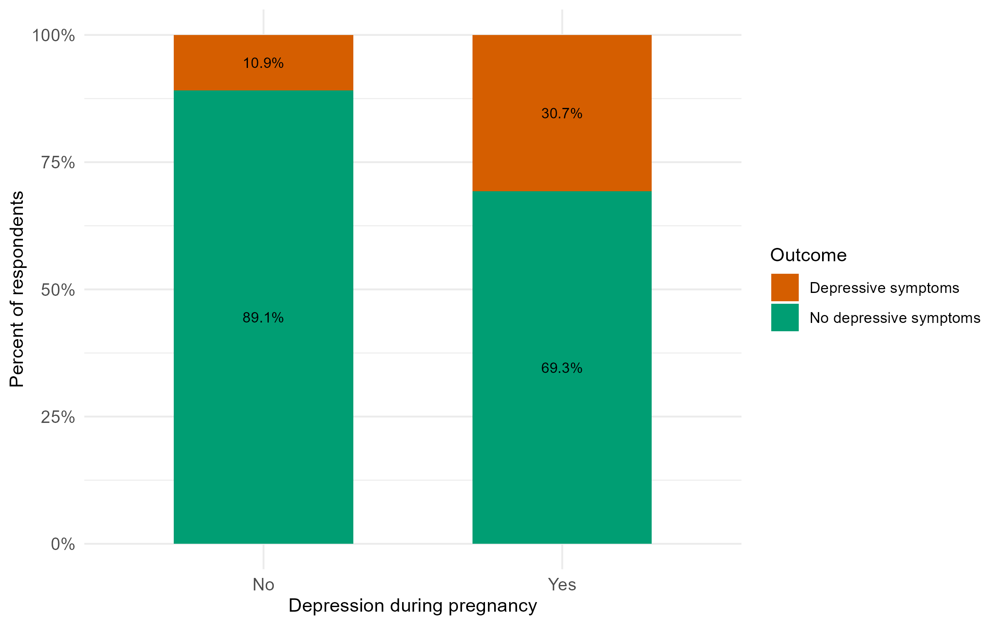
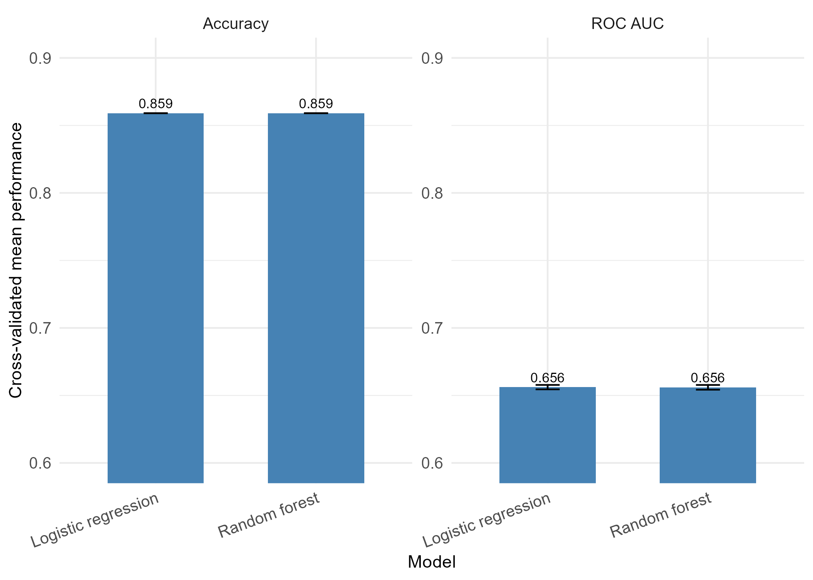

| Characteristic | n | Percent |
|---|---|---|
| Sample size | ||
| Total respondents | 237,392 | 100.0% |
| Respondents in analytic sample | 233,213 | 98.2% |
| Prenatal screening | ||
| Screened during prenatal care | 192,539 | 82.6% |
| Not screened during prenatal care | 44,853 | 17.4% |
| Postpartum depressive symptoms | ||
| Yes | 33,599 | 14.4% |
| No | 199,614 | 85.6% |
| Depression during pregnancy | ||
| No | 197,546 | 84.7% |
| Yes | 35,667 | 15.3% |
| Maternal education | ||
| Less than high school | 6,401 | 2.7% |
| High school graduate | 20,158 | 8.6% |
| Some college | 56,114 | 24.1% |
| College graduate | 64,866 | 27.8% |
| More than college | 85,674 | 36.7% |
Prenatal Mental Health Screening and Postpartum Depressive Symptoms
Disclaimer: The opinions expressed in this article are the author’s own and do not reflect their employer.
1 Abstract
This study examines whether prenatal mental health screening is associated with postpartum depressive symptoms using data from the Pregnancy Risk Assessment Monitoring System (PRAMS) Phase 8. The analysis focuses on self-reported prenatal care experiences and postpartum mental health outcomes.
Descriptive statistics and multivariable logistic regression were used to examine whether screening is associated with differences in reported depressive symptoms, adjusting for key covariates. Prenatal mental health screening was associated with lower odds of postpartum depressive symptoms, though the association was modest. Findings should be interpreted cautiously given the observational and self-reported nature of the data.
2 Introduction
Postpartum depression is a significant public health concern that affects maternal well-being, family functioning, and infant outcomes Bauman et al. (2020). Clinical guidelines increasingly recommend routine screening for depression and anxiety during pregnancy and the postpartum period American College of Obstetricians and Gynecologists (2023); U.S. Preventive Services Task Force (2019).
Despite these recommendations, it is still not clear whether prenatal mental health screening translates to lower rates of postpartum depressive symptoms at the population level. Most of the existing evidence comes from clinical or intervention-based settings, with less focus on large-scale surveillance data.
This study uses PRAMS Phase 8 data to examine whether individuals who report being asked about depression or anxiety during prenatal care are less likely to report postpartum depressive symptoms.
Prenatal and postpartum mental health are now recognized as key components of maternal health. Poor maternal mental health has been linked to adverse outcomes for both mothers and infants, including reduced maternal functioning and challenges in early child development American College of Obstetricians and Gynecologists (2023). As a result, providers are encouraged to assess mental health throughout pregnancy and after delivery.
Screening during pregnancy may help identify individuals who are already experiencing symptoms or who are at higher risk of postpartum depression. However, population-level evidence on how prenatal screening relates to postpartum depressive symptoms remains limited, and understanding this relationship could help inform both clinical practice and public health policy.
Data for this study come from PRAMS, a population-based surveillance system conducted by the Centers for Disease Control and Prevention in collaboration with state health departments Centers for Disease Control and Prevention (2024a); Centers for Disease Control and Prevention (2024b). PRAMS collects self-reported survey data from individuals who recently had a live birth and links responses to selected birth certificate variables. The survey covers maternal experiences before, during, and shortly after pregnancy, including prenatal care, health behaviors, mental health, and postpartum outcomes.
PRAMS Phase 8 includes several hundred variables and tens of thousands of respondents across participating states, making it well suited for exploratory analysis and regression modeling.
2.1 Research Question
Are individuals who report being asked about depression or anxiety during prenatal care less likely to report postpartum depressive symptoms?
The primary outcome is self-reported postpartum depressive symptoms, measured using PRAMS survey items assessing feelings of depression and loss of interest since birth. The primary predictor is prenatal mental health screening, defined as whether a healthcare provider asked about depression or anxiety during prenatal visits. Additional covariates include depression during pregnancy and maternal education.
3 Methods
3.1 Use of Computational Assistance
ChatGPT was used to help troubleshoot parts of the code. All analyses, decisions, and interpretations were reviewed and completed by the author.
3.2 Analysis Approach
The analysis started with descriptive summaries and exploratory comparisons between individuals who did and did not report prenatal mental health screening. These steps helped assess data quality, identify missing data patterns, and examine initial relationships in the data.
Regression models and model validation approaches were then used to examine the association between prenatal screening and postpartum depressive symptoms while accounting for key covariates.
3.3 Data Source
Data were obtained from PRAMS, a population-based surveillance system conducted by the Centers for Disease Control and Prevention in collaboration with state health departments. PRAMS collects self-reported information on maternal experiences before, during, and shortly after pregnancy.
Because PRAMS uses a complex survey design, weighted analyses can be conducted using the survey design variables provided in the dataset. The analyses here are unweighted and intended as an exploratory course project focused on reproducible modeling workflows.
3.4 Study Population
The full PRAMS analytic dataset included 237,392 respondents. After excluding observations with missing values for the primary exposure, outcome, and selected covariates, the final analytic sample included 233,213 respondents.
3.5 Measures
The primary exposure was self-reported prenatal mental health screening, based on a PRAMS survey item asking whether a healthcare provider discussed depression or anxiety during prenatal care. This was coded as a binary indicator.
The primary outcome was postpartum depressive symptoms, measured using PRAMS survey items assessing feelings of depression and loss of interest following childbirth. These items have been used in previous research on postpartum depressive symptoms with PRAMS data Bauman et al. (2020); Farr et al. (2016).
Key covariates were depression during pregnancy and maternal education. Depression during pregnancy was included because individuals with prior depression are more likely to experience postpartum depressive symptoms. Maternal education was included as a sociodemographic variable that may influence both healthcare access and mental health outcomes.
3.6 Statistical Approach
Exploratory analyses included descriptive statistics, cross-tabulations, and bar charts comparing postpartum depressive symptoms by screening status. All analyses were conducted in R.
Multivariable logistic regression was used with postpartum depressive symptoms as the binary outcome. Prenatal mental health screening was the primary exposure, with depression during pregnancy and maternal education included as covariates. Results are presented as odds ratios with 95% confidence intervals.
To explore whether a more flexible model improved prediction, logistic regression was compared with a random forest model using 5-fold cross-validation. The random forest was fit using the ranger engine with 300 trees and default hyperparameters for mtry and minimum node size. Model performance was evaluated using accuracy and ROC AUC, with mean performance and standard error across folds used to assess stability.
4 Results
The analytic sample included 233,213 respondents. Overall, 82.6% reported being screened for depression during prenatal care, and 14.4% reported postpartum depressive symptoms.
4.1 Exploratory Analysis
Postpartum depressive symptoms were slightly more common among respondents who were not screened (15.2%) than among those who were screened (13.9%). Higher rates were also observed among respondents who reported depression during pregnancy, and differences across education groups were also apparent.
| Predictor | Odds ratio | 95% CI | P value |
|---|---|---|---|
| Prenatal mental health screening | 0.90 | (0.87, 0.93) | <0.001 |
| Note: Unadjusted model. Reference group: not screened during prenatal care. |
Before adjusting for covariates, screened respondents already had lower odds of postpartum depressive symptoms compared with those who were not screened.
| Predictor | Odds ratio | 95% CI | P value |
|---|---|---|---|
| Screened during prenatal care | 0.76 | (0.74, 0.78) | <0.001 |
| Depression during pregnancy | 3.38 | (3.29, 3.47) | <0.001 |
| High school graduate | 1.36 | (1.25, 1.48) | <0.001 |
| Some college | 1.29 | (1.19, 1.40) | <0.001 |
| College graduate | 1.09 | (1.01, 1.18) | 0.034 |
| More than college | 0.69 | (0.64, 0.75) | <0.001 |
| Note: Reference groups: not screened during prenatal care, no depression during pregnancy, less than high school education. |


Depression during pregnancy stood out as a strong predictor — about 30.7% of respondents who reported depression during pregnancy also reported postpartum depressive symptoms, compared with 10.9% among those who did not.
| Screening status | Depressive symptoms | No depressive symptoms |
|---|---|---|
| Not screened | 6,817 (15.2%) | 38,036 (84.8%) |
| Screened | 26,782 (13.9%) | 165,757 (86.1%) |
Table 4 shows that 15.2% of unscreened respondents reported postpartum depressive symptoms compared with 13.9% among screened respondents, consistent with the adjusted model results.
| Model | Accuracy (SE) | ROC AUC (SE) |
|---|---|---|
| Logistic regression | 0.859 (0.001) | 0.656 (0.004) |
| Random forest | 0.859 (0.001) | 0.656 (0.004) |

Both models performed nearly identically — accuracy of 0.859 and ROC AUC of 0.656 for each. The standard errors across folds were small, which suggests the results were stable and not sensitive to which observations were held out. A ROC AUC of 0.656 reflects modest discriminative ability, which is not surprising given the small number of predictors. Because the random forest did not improve on logistic regression, the simpler model was retained.
In the adjusted model, respondents who reported prenatal mental health screening had lower odds of postpartum depressive symptoms compared with those who were not screened (OR = 0.76, 95% CI: 0.74, 0.78, p < 0.001), even after accounting for depression during pregnancy and maternal education.
5 Discussion
This study looked at whether prenatal mental health screening was associated with lower odds of postpartum depressive symptoms using PRAMS data. Screened respondents had modestly lower odds of postpartum depressive symptoms even after adjusting for prior depression and education, though the observational design means causality cannot be established.
These findings are broadly consistent with prior work showing that postpartum depressive symptoms are common and that provider screening practices vary Bauman et al. (2020); Farr et al. (2016). Clinical guidelines recommend routine screening during pregnancy and postpartum American College of Obstetricians and Gynecologists (2023), and these results add to the population-level evidence on how screening relates to reported symptoms.
The most striking finding was how strongly depression during pregnancy predicted postpartum depressive symptoms — those with prior depression were nearly three times as likely to report postpartum symptoms. This reinforces how important it is to account for mental health history when studying postpartum outcomes.
It is worth being clear about what this study cannot show. Because the data are cross-sectional and self-reported, there is no way to determine whether screening itself caused better outcomes. Individuals who were screened may also have had better access to care or more engaged providers, which could independently influence postpartum mental health.
PRAMS is a large, population based dataset that includes multiple states, so it gives enough data to run solid analyses and makes the findings more generalizable than studies from just one location. At the same time, there are some limitations to keep in mind.
The data are self reported, which can introduce recall bias, and the measure of postpartum depressive symptoms is not the same as a clinical diagnosis. Because the data are cross sectional, it is also hard to draw cause and effect conclusions. There may also be other factors, like insurance status, social support, or provider practices, that were not included but could influence the results.
Moving forward, it would help to include variables such as insurance coverage, access to mental health services, and socioeconomic factors, and to use the PRAMS survey weights so the results better reflect the broader population.
6 References
American College of Obstetricians and Gynecologists. (2023). Screening and diagnosis of mental health conditions during pregnancy and postpartum. https://www.acog.org/clinical/clinical-guidance/clinical-practice-guideline/articles/2023/06/screening-and-diagnosis-of-mental-health-conditions-during-pregnancy-and-postpartum
Bauman, B. L., Ko, J. Y., Cox, S., D’Angelo, D. V., Warner, L., Folger, S. G., Tevendale, H. D., Rockhill, K. M., Galang, R. R., Barfield, W. D., Kroelinger, C. D., & Morrow, B. (2020). Vital signs: Postpartum depressive symptoms and provider discussions about perinatal depression — united states, 2018. Morbidity and Mortality Weekly Report, 69(19), 575–581. https://doi.org/10.15585/mmwr.mm6919a2
Centers for Disease Control and Prevention. (2024a). Phase 8 automated research file codebook. https://www.cdc.gov/prams/php/data-research/codebooks-phase-8.html
Centers for Disease Control and Prevention. (2024b). PRAMS phase 8 topic reference document. https://www.cdc.gov/prams/pdf/questionnaire/phase-8-topics-reference_508tagged.pdf
Farr, S. L., Dietz, P. M., O’Hara, M. W., Burley, K., Ko, J. Y., & Gibbs Pickens, C. M. (2016). Provider communication on perinatal depression: A population-based study. Archives of Women’s Mental Health, 19(1), 35–40. https://doi.org/https://doi.org/10.1089/jwh.2013.4438
U.S. Preventive Services Task Force. (2019). Perinatal depression: Preventive interventions. https://www.uspreventiveservicestaskforce.org/uspstf/recommendation/perinatal-depression-preventive-interventions